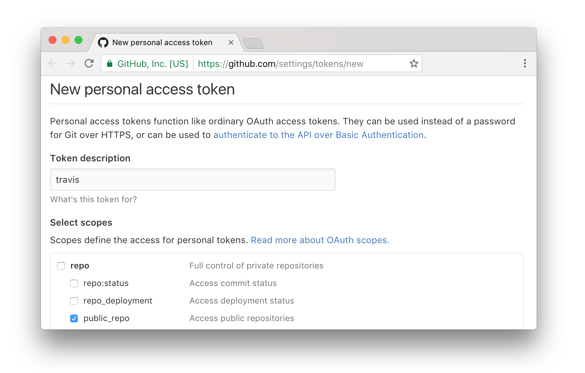

packagedocs provides a mechanism for simple generation and automated deployment nice-looking online R package documentation that plugs into the traditional R package vignette system.
Some features of this package include:
vignettes/docs.RmdAdding packagedocs documentation to a package is quite straightforward.
Given an R package directory with documented functions, you can initialize your vignettes from within the package’s directory with:
# in current package directory
packagedocs::init_vignettes()This will create three files in your package’s vignettes directory: docs.Rmd, rd.Rmd, and rd_index.yaml. You can read more about the latter two files in the “Function Reference Customization” section below, but the main file of interest is vignettes/docs.Rmd.
The docs.Rmd file is the home webpage for your package’s documentation. The main content has very little structure, allowing you to insert any rmarkdown formatted document. (Just like this one!). The docs.Rmd file is a great place to show off long examples that regular function documentation just cannot do justice.
packagedocs::build_vignettes()This manually builds vignettes and places them by default in a directory _gh-pages. You can view the pages in this directory to see what your rendered documentation looks like. This function also generates vignette files placed in inst/docs that redirect to the location where you will host the pages.
You can push the contents of this directory to a custom website location where you would like to host your documentation. If you do this, look at the redirect: option in the header yaml of your .Rmd files to make sure the redirects are pointing the correct location.
A much more convenient option, however, is to configure your packagedocs to be delpoyed automatically by the TravisCI build every time you make a package commit to Github.
To initialize automatic documentation builds from TravisCI, you need to do the following:
GITHUB_PAT. This can be done by visiting Github > Settings > Tokens. The minimal scope to select is “public_repo”. Install the TravisCI Ruby Gem (and Ruby if it isn’t installed). On most MacOS and Linux systems, Ruby is already installed. On Windows, a good option for Ruby is RubyInstaller. Once you have Ruby, you need to install the travis Ruby gem:
gem install travisRun:
packagedocs::use_travis()This will set things appropriately in your .travis.yml file such that future commits will build the documentation and push it to the gh-pages branch of your repository.
Note that if you go the use_travis() route, you never need to run packagedocs::build_vignettes() locally other than as a method to check the vignette output prior to deploying, and once to generate the vignette redirects.
You are now all set up.
When you initialize your packagedocs vignettes, files are generated that provide a default rendering of the function reference, which is a listing of all documented functions in the package. The files created that are related to the function reference are rd.Rmd and rd_index.yaml.
rd.Rmd is a shell file that will be filled with contents as specified in rd_index.yaml. It is okay to not touch this file at all, but if you’d like you can add some header content to this document.
rd_index.yaml is a yaml file that specifies the layout of function documentation that will be populated in rd.Rmd.
rd_index.yaml has two main sections: knitr and sections. The knitr section allows you to specify a list of knitr chunk options. These options are the default options for all topics. They may be overwritten in each topic for different behavior
The sections partion of rd_index.yaml allows you to specify the grouping and ordering of documentation topics. It contains a list of section and topics pairs. Initially, the section pairs in the rd_index.yaml file are auto-generated according to the keywords used in the package documentation. All functions that do not have a keyword will be placed in the last section. internal keyword functions will not be added automatically. It is okay to rename, remove, rearrange, or repeat the sections and topics!
A topic may be a single character string. This will be upgraded at run time. The following example will produce the same topic:
The following topic object fields will be understood by packagedocs:
title
title field is the string of text that will be displayed in the table of contents and at the top of the documentation for the specific topic.gsub("\\.Rd", "", file)title or file fields must be providedfile
file field corresponds to the name of the R documentation file that will be displayed. These files can be found in your man folder.paste0(title, ".Rd").title or file fields must be providedknitr
The topics below will all produce the same information:
You can look at examples of rd_index.yaml files here and here for an idea of what is possible.
As you are developing your package, you are bound to add, remove, or rename functions. To keep your rd_index.yaml file up to date, there is a convenience function:
packagedocs::check_rd_index()Which will tell you both what topics are missing in your rd_index.yaml and what topics specified in rd_index.yaml no longer exist.
It is worth noting a few opinions that are baked into this package. To make this package simple, we had to make some judgements and sacrifice some flexibility. Some of the assumptions this package is based on are discussed here.
First, with this package your vignette is a single R Markdown document. If you like the idea of multiple vignettes, think of each individual vignette as a section in this master R markdown document. Personally, when packages have multiple vignettes, I find it difficult to know which ones are relevant and in what order I should look at them. With a single master vignette, there is a better complete narrative but still the ability to break things into natural sections. You do have the ability to add other vignettes (see below) and even link into them in your packagedocs vignettes if you’d like.
Second, I am a huge proponent of only storing minimal code that is needed to support a package on github. Repositories quickly become bloated when generating and re-generating binary or difficult-to-diff files like raster images or large htmlwidget blobs. Aditionally, compiling all of the necessary components into two self contained vignettes often makes the package too large to submit to CRAN without issues. Therefore, packagedocs takes the approach of creating html vignettes that are submitted to CRAN that automatically redirect to the gh-pages of the github repository of the R package. This allows for documentation that directly matches the latest master branch while not over inflating the package that is submitted to CRAN. Only your vignette sources (vignettes/docs.Rmd, etc.) are checked in to github, but the resulting generated pages are deployed in a separate branch, gh-pages,
packagedocs creates two forms of vignettes: html redirect vignettes that are submitted to CRAN and full html vignettes that are placed in the gh-pages of your github repo. We refer to them as ‘CRAN vignettes’ and ‘gh-pages vignettes’ respectively.
There is only one packagedocs vignette engine: packagedocs::redirect. This engine requires an .Rmd file with the key redirect in the yaml header of the .Rmd file. It will produce an html vignette that automatically redirects to the website provided.
Package docs may be built along side other vignette engines, such as knitr. To include other vignette engines, set your VignetteBuilder line in the DESCRIPTION file to be, for example, VignetteBuilder: packagedocs,knitr. When the regular vignette build process occurs, the non-packagedocs vignettes will be built like normal, and the packagedocs vignettes will produce html redirects to the gh-pages vignettes on github. packagedocs::build_vignettes() and packagedocs::deploy_travis() will generate all vignette files (even non-packagedocs vignettes). Feel free to add your other vignettes to the navpills header field of docs.Rmd and rd.Rmd vignettes for in between vignette navigation.
By default, if it is the master branch and it is not a pull request, packagedocs::deploy_travis() will build both the CRAN vignettes and gh-pages vignettes. deploy_travis() will then deploy the generated _gh-pages folder (default) from Travis to the package’s github repo. This forced commit will be done by “Travis CI” user (default).
Please look at deploy_travis for more information.
Also note that deploy_travis will STOMP the gh-pages every time it is called. Use this function wisely!
The template style for the generated pages is based on Bootstrap with several customizations. These are built using less and gulp with node.js. These are not necessary for using the package, but for development, you can do bower install after checking out the repo to get a dev environment going.
This package has gone through several iterations, and was heavily influenced and borrows from Hadley Wickham’s staticdocs (now pkgdown) package.